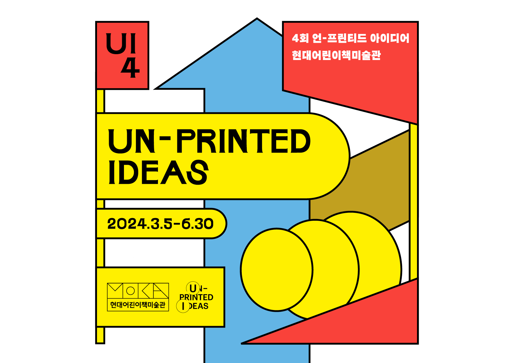
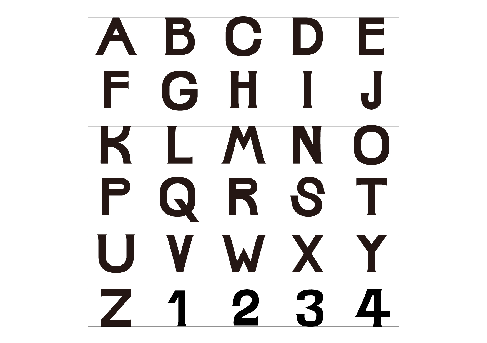
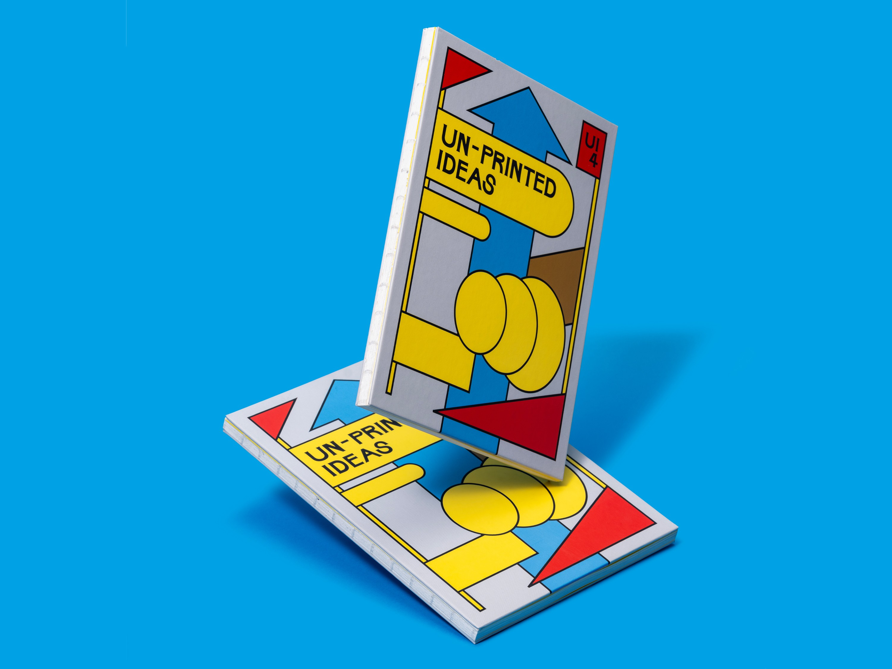
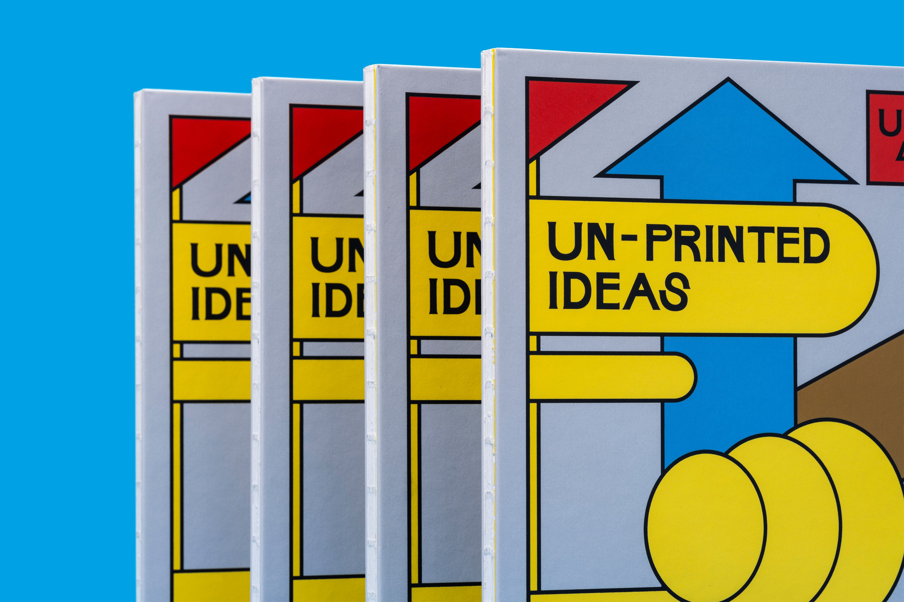
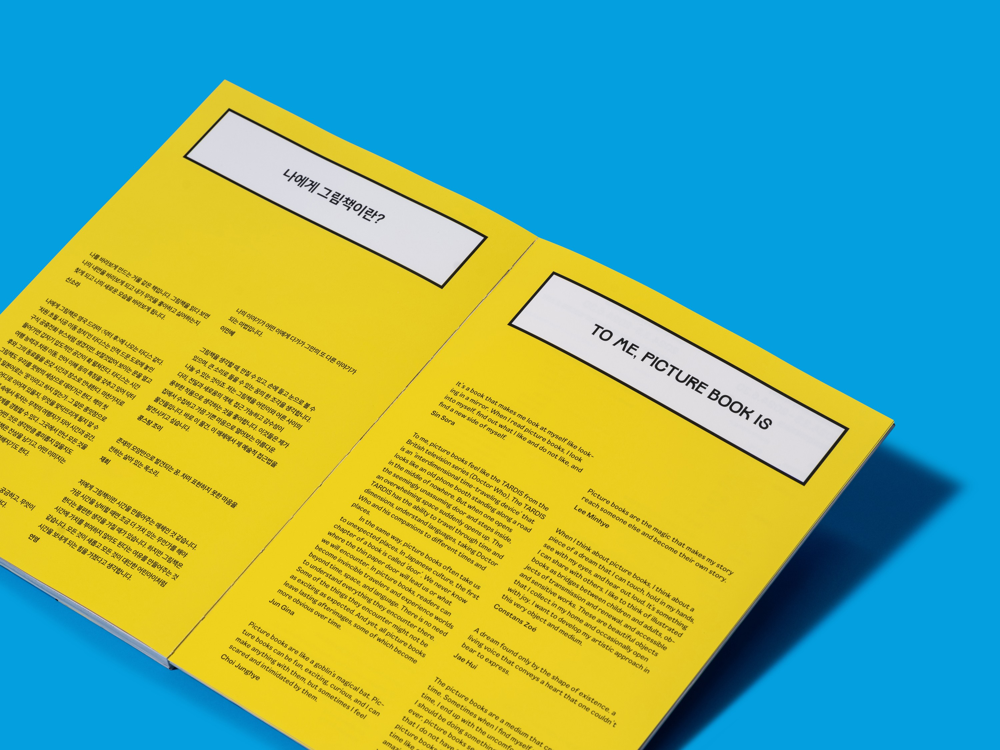
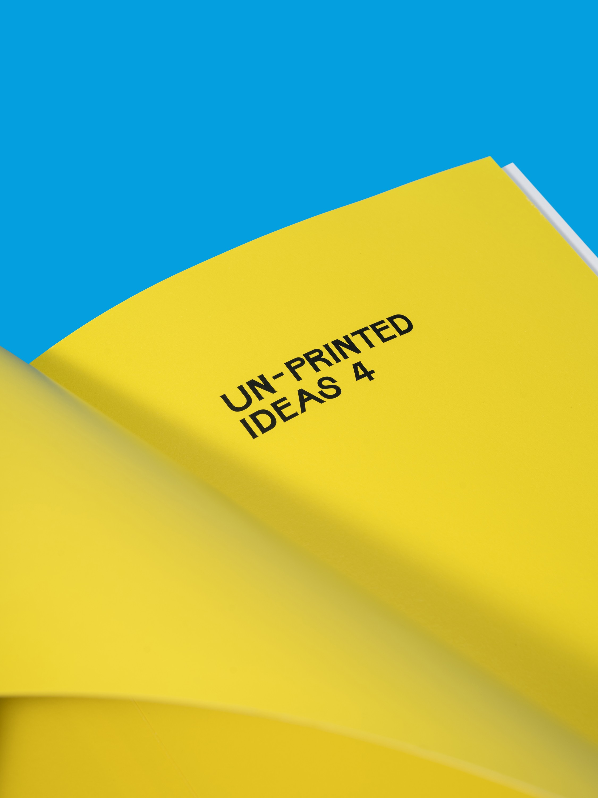
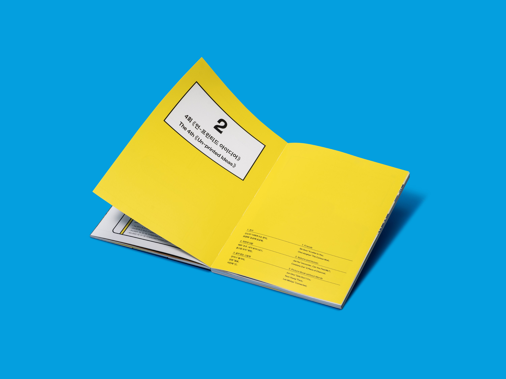
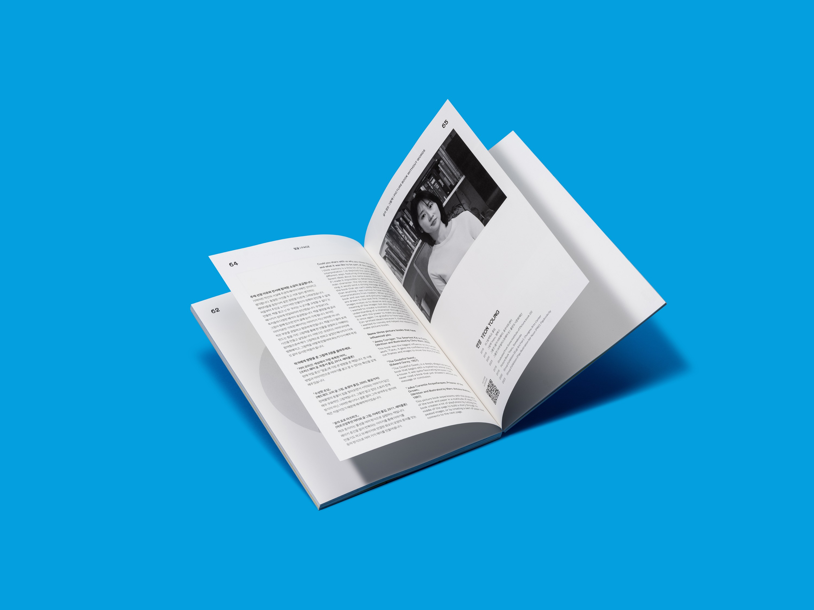
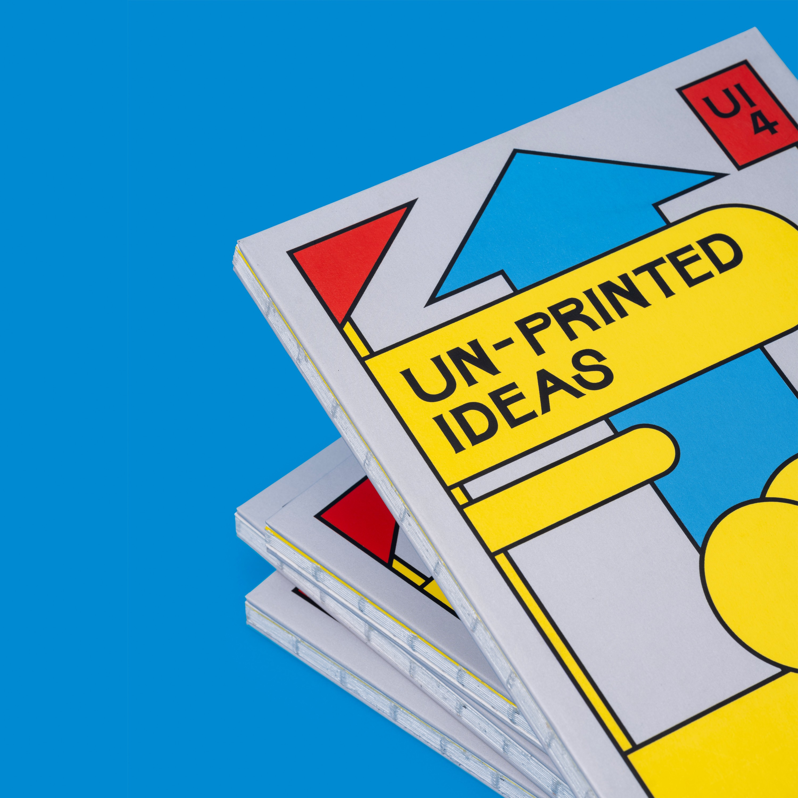
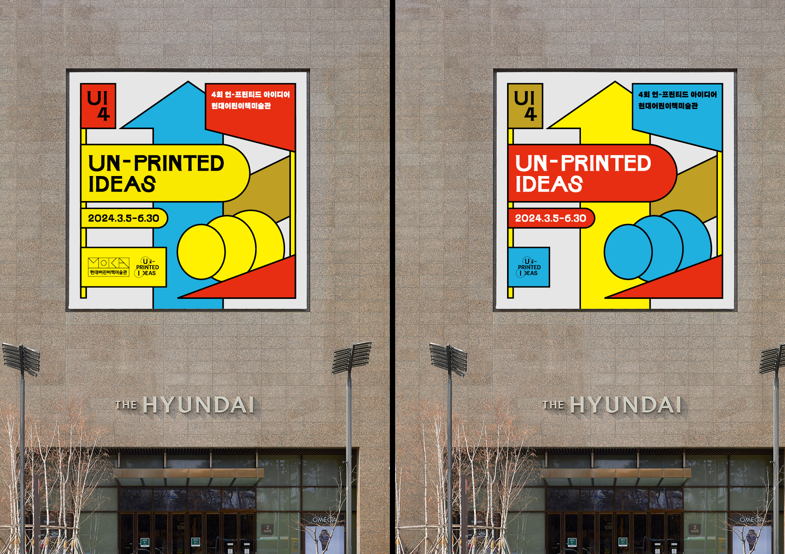

현대어린이책미술관(MOKA)에서 개최된 제4회 언-프린티드 아이디어 전시의 그래픽 아이덴티티 및 전시 디자인.
'인쇄되지 않은 아이디어'를 주제로 어린이와 예술 사이의 경계를 실험하는 전시를 위해, 기본 도형과 원색의 조합으로 구성된 생동감 있는 비주얼 시스템을 설계했다. 빨강, 파랑, 노랑의 삼원색과 기하학적 형태를 레이어링하여 어린이의 시각과 동시대 그래픽 감각을 동시에 충족하는 아이덴티티를 구축했다.
UI4라는 전시 고유의 타이포그래픽 마크는 포스터, 현수막, 브로슈어, 전시 공간 사이니지 등 전반에 걸쳐 일관되게 적용되었다.








